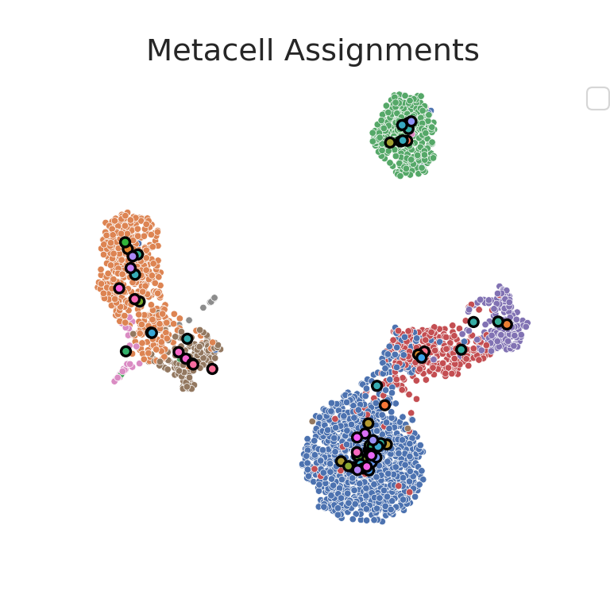
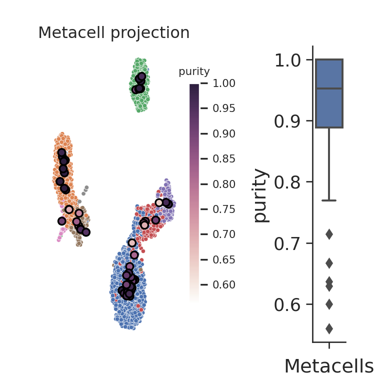
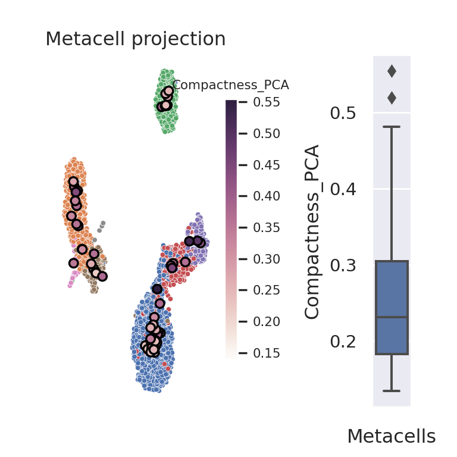
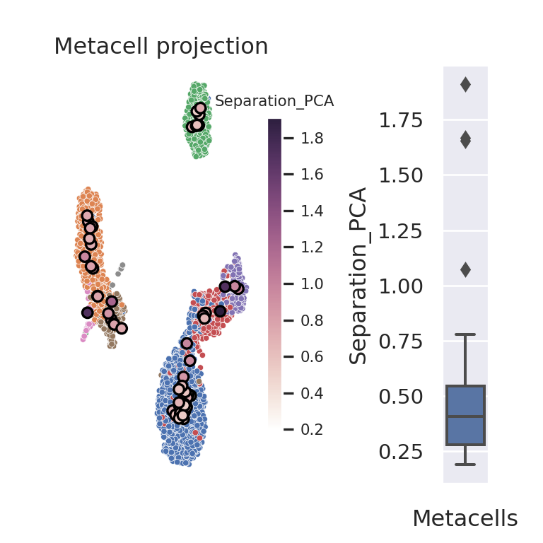

3.1 MC2 (Python)
In this section, we construct metacells using Metacell-2 (MC2). The code is adapted from the author’s tutorial. For more information on the method, please refer to the section 1 of chapter 2.
Importing python packages
To run Metacell-2, the following python packages need to be imported:
import os
import numpy as np
import pandas as pd
import anndata as ad
import scanpy as sc
import matplotlib.pyplot as plt
import seaborn as sns
import metacells as mcimport sys
sys.path.append('./mc_QC/')
import mc_QCIf you don’t have these packages installed, please refer to the section 2 of chapter 1.
3.1.1 Data loading
We will run Metacell-2 on a single-cell dataset composed of XX peripheral blood mononuclear cells (PBMCs). Please follow the section 4 from Chapter 1 to retrieve these data from the scanpy package and save the data in the following file: “data/3k_pbmc/singlecell_anndata_filtered.h5ad”.
MC_tool = "MC2"
proj_name = "3k_pbmc"
ad = sc.read(os.path.join("data", proj_name, "singlecell_anndata_filtered.h5ad"))We initialize the name of the anndata (in the unstructured annotations) object using the ut.set_name function from the Metacells package.
mc.ut.set_name(ad, proj_name)3.1.2 Filtering steps
Before building the metacells the Metacell-2 authors recommend to filter the single-cell data in two-steps (See original vignette). A first filtering step consists in filtering genes based on biological knowledge (e.g. mitochrondrial genes) or based on their expression levels. The latter genes include genes with zero expression or low expression levels, “noisy lonely genes” (i.e., genes with high expression levels but no correlation with any other gene). A second filtering step consists in filtering cells based on their UMI counts.
Gene filtering
In section XX form Chapter XX, we pre-processed the raw scRNA-Seq data and excluded genes with low expression as well as mitochondrial genes. In the following code chunk, we identify additional genes to filter using the analyze_clean_genes and pick_clean_genes functions from the Metacells package, which returns three sets of genes: i) the known-to-be-excluded genes defined by the user as an array of gene names or gene names patterns, ii) the properly sampled genes, and iii) the “noisy lonely genes”.
excluded_gene_names = [] # for example, ['IGHMBP2', 'IGLL1', 'IGLL5', 'IGLON5', 'NEAT1', 'TMSB10', 'TMSB4X']
excluded_gene_patterns = ['MT-.*']
mc.pl.analyze_clean_genes(ad,
excluded_gene_names=excluded_gene_names,
excluded_gene_patterns=excluded_gene_patterns,
random_seed=123456)
#> set 3k_pbmc.var[properly_sampled_gene]: 16579 true (50.64%) out of 32738 bools
#> set 3k_pbmc.var[excluded_gene]: 13 true (0.03971%) out of 32738 bools
#> set 3k_pbmc.var[noisy_lonely_gene]: 0 true (0%) out of 32738 bools
mc.pl.pick_clean_genes(ad)
#> set 3k_pbmc.var[clean_gene]: 16566 true (50.6%) out of 32738 boolsCell filtering
The first round of cell cleaning implies filtering out cell with very low and very hight UMI content (properly_sampled_min_cell_total, properly_sampled_max_cell_total parameters).
The second round includes cell filtering based on UMI counts in excluded genes (properly_sampled_max_excluded_genes_fraction parameter).
Since our dataset have been pre-filtered, very lenient cutoffs will be used in this tutorial (properly_sampled_min_cell_total, properly_sampled_max_cell_total and properly_sampled_max_excluded_genes_fraction) such that all the cells are kept for the metacell construction.
The following code chunk defines these parameters. To adapt them to your datasets, we advise you to explore the distributions of total UMI counts and UMI counts in excluded genes, as recommended and descrided in the Metacell-2 original vignette.
### The first round of cell cleaning (high/low UMIs)
properly_sampled_min_cell_total = 200
properly_sampled_max_cell_total = 10000
## The second round of cell cleaning (content of excluded genes, e.g., mito-genes)
properly_sampled_max_excluded_genes_fraction = 0.25The set of cells to be filtered is defined using the analyze_clean_cells and pick_clean_cells functions from the Metacell-2 package.
mc.pl.analyze_clean_cells(
ad,
properly_sampled_min_cell_total = properly_sampled_min_cell_total,
properly_sampled_max_cell_total = properly_sampled_max_cell_total,
properly_sampled_max_excluded_genes_fraction = properly_sampled_max_excluded_genes_fraction
)
#> set 3k_pbmc.obs[properly_sampled_cell]: 2638 true (100%) out of 2638 bools
mc.pl.pick_clean_cells(ad)
#> set 3k_pbmc.obs[clean_cell]: 2638 true (100%) out of 2638 boolsAfter performing the two-step filtering (genes and cells), the “cleaned” data can be extracted using the pl.extract_clean_data prior to metacells construction.
# Extract clean dataset (with filtered cells and genes)
ad = mc.pl.extract_clean_data(ad)
#> set 3k_pbmc.clean.obs[full_cell_index]: 2638 int64s
#> set 3k_pbmc.clean.var[full_gene_index]: 16566 int64s3.1.3 Building metacells
Estimate target_metacell_size (gamma)
In contrast to the SuperCell and SEACells, Metacell-2 does not allow to explicitly obtain metacell data at a user-defined graining level.
Instead, to vary the graining level, we have to vary the target_metacell_size parameter, that is 160000 by default. Here we provide a chunk to calibrate this value to reach a desired graining level.
Please, increase or decrease the scale parameter if the obtained graining level (gamma_obtained) is lower or larger than the requested one (gamma).
gamma = 50 # graining level
print(f'The requested graining level is {gamma}, lets estimate the target_metacell_size that should result in such graining level.')
#> The requested graining level is 50, lets estimate the target_metacell_size that should result in such graining level.
scale = 2 # increase or decrease if the obtained graining level (`gamma_obtained`) is significantly > or < then the requested one `gamma`
# estimated mean UMI content in downsampled data
total_umis_of_cells = mc.ut.get_o_numpy(ad, name='__x__', sum=True)
est_downsample_UMI = np.quantile(np.array(total_umis_of_cells), 0.05)
target_metacell_size = int(est_downsample_UMI * gamma * scale)
target_metacell_size
#> 98900Metacells identification using the divide and conquer approach
Metacell-2 uses its own feature selection approach (i.e., selection of genes used to build metacells).
Additionally, users can explicitly specify which features should be used by providing two arguments:
i) feature_gene_names, i.e., genes that have to be included and, ii) forbidden_gene_names, i.e., genes that have to be excluded.
Examples of forbidden are cell cycle genes which reflect true biological signal but could bias the metacells construction. The Metacell-2 original vignette provides additional information to identify forbidden genes.
The previous arguments for feature selection are taken as input by the pl.divide_and_conquer_pipeline function which builds the metacells.
Note that by default all cores of the system will be used for the metacells construction. More information are available on the original vignette to change this behavior and adapt the number of cores (see ut.set_processors_count) or the number processed in parallel (see pl.set_max_parallel_piles).
mc.pl.divide_and_conquer_pipeline(
ad,
#feature_gene_names = feature_gene_names, # comment this line to allow Metacell2 selecting features
#forbidden_gene_names = forbidden_gene_names, # comment this line to allow Metacell2 selecting features
target_metacell_size = target_metacell_size,
random_seed = 123456)
#> set 3k_pbmc.clean.var[rare_gene]: 0 true (0%) out of 16566 bools
#> set 3k_pbmc.clean.var[rare_gene_module]: 16566 int32 elements with all outliers (100%)
#> set 3k_pbmc.clean.obs[cells_rare_gene_module]: 2638 int32 elements with all outliers (100%)
#> set 3k_pbmc.clean.obs[rare_cell]: 0 true (0%) out of 2638 bools
#> set 3k_pbmc.clean.layers[downsampled]: csr_matrix 2638 X 16566 float32s (1218892 > 0)
#> set 3k_pbmc.clean.uns[downsample_samples]: 989
#> set 3k_pbmc.clean.var[high_top3_gene]: 552 true (3.332%) out of 16566 bools
#> set 3k_pbmc.clean.var[high_total_gene]: 4519 true (27.28%) out of 16566 bools
#> set 3k_pbmc.clean.var[high_relative_variance_gene]: 3027 true (18.27%) out of 16566 bools
#> set 3k_pbmc.clean.var[feature_gene]: 293 true (1.769%) out of 16566 bools
#> set 3k_pbmc.clean.obsp[obs_similarity]: ndarray 2638 X 2638 float32s
#> set 3k_pbmc.clean.obsp[obs_outgoing_weights]: csr_matrix 2638 X 2638 float32s (117211 > 0)
#> set 3k_pbmc.clean.obs[seed]: 496 outliers (18.8%) out of 2638 int32 elements with 61 groups with mean size 35.11
#> set 3k_pbmc.clean.obs[candidate]: 6 outliers (0.2274%) out of 2638 int32 elements with 67 groups with mean size 39.28
#> set 3k_pbmc.clean.var[gene_deviant_votes]: 942 positive (5.686%) out of 16566 int32s
#> set 3k_pbmc.clean.obs[cell_deviant_votes]: 889 positive (33.7%) out of 2638 int32s
#> set 3k_pbmc.clean.obs[dissolved]: 10 true (0.3791%) out of 2638 bools
#> set 3k_pbmc.clean.obs[metacell]: 905 outliers (34.31%) out of 2638 int64 elements with 66 groups with mean size 26.26
#> set 3k_pbmc.clean.obs[outlier]: 905 true (34.31%) out of 2638 bools
#> set 3k_pbmc.clean.uns[pre_directs]: 0
#> set 3k_pbmc.clean.uns[directs]: 1
#> set 3k_pbmc.clean.var[pre_high_total_gene]: * <- 0
#> set 3k_pbmc.clean.var[high_total_gene]: 4519 positive (27.28%) out of 16566 int32s
#> set 3k_pbmc.clean.var[pre_high_relative_variance_gene]: * <- 0
#> set 3k_pbmc.clean.var[high_relative_variance_gene]: 3027 positive (18.27%) out of 16566 int32s
#> set 3k_pbmc.clean.var[forbidden_gene]: * <- False
#> set 3k_pbmc.clean.var[pre_feature_gene]: * <- 0
#> set 3k_pbmc.clean.var[feature_gene]: 293 positive (1.769%) out of 16566 int32s
#> set 3k_pbmc.clean.var[pre_gene_deviant_votes]: * <- 0
#> set 3k_pbmc.clean.obs[pre_cell_directs]: * <- 0
#> set 3k_pbmc.clean.obs[cell_directs]: * <- 0
#> set 3k_pbmc.clean.obs[pre_pile]: * <- -1
#> set 3k_pbmc.clean.obs[pile]: * <- 0
#> set 3k_pbmc.clean.obs[pre_candidate]: * <- -1
#> set 3k_pbmc.clean.obs[pre_cell_deviant_votes]: * <- 0
#> set 3k_pbmc.clean.obs[pre_dissolved]: * <- False
#> set 3k_pbmc.clean.obs[pre_metacell]: * <- -1
ad.obs.metacell.head
#> <bound method NDFrame.head of index
#> AAACATACAACCAC-1 36
#> AAACATTGAGCTAC-1 14
#> AAACATTGATCAGC-1 26
#> AAACCGTGCTTCCG-1 62
#> AAACCGTGTATGCG-1 -1
#> ..
#> TTTCGAACTCTCAT-1 62
#> TTTCTACTGAGGCA-1 14
#> TTTCTACTTCCTCG-1 -1
#> TTTGCATGAGAGGC-1 28
#> TTTGCATGCCTCAC-1 27
#> Name: metacell, Length: 2638, dtype: int64>Retrieve aggregated metacell data
The pl.divide_and_conquer_pipeline function associate each cell to a metacell or defines the cell as outlier. These assignments are found in the obs layer of the anndata object
The function pl.collect_metacells should be used to subsequently retrieve an anndata object containing the data at the metacells level instead of the single-cell level.
mc_ad = mc.pl.collect_metacells(ad, name='metacells')
#> set metacells.var[excluded_gene]: 0 true (0%) out of 16566 bools
#> set metacells.var[clean_gene]: 16566 true (100%) out of 16566 bools
#> set metacells.var[forbidden_gene]: 0 true (0%) out of 16566 bools
#> set metacells.var[pre_feature_gene]: 0 positive (0%) out of 16566 int32s
#> set metacells.var[feature_gene]: 293 positive (1.769%) out of 16566 int32s
#> set metacells.obs[pile]: [ 0, 0, 0, 0, 0, 0, 0, 0, 0, 0, 0, 0, 0, 0, 0, 0, 0, 0, 0, 0, 0, 0, 0, 0, 0, 0, 0, 0, 0, 0, 0, 0, 0, 0, 0, 0, 0, 0, 0, 0, 0, 0, 0, 0, 0, 0, 0, 0, 0, 0, 0, 0, 0, 0, 0, 0, 0, 0, 0, 0, 0, 0, 0, 0, 0, 0 ]
#> set metacells.obs[candidate]: [ 1, 2, 3, 4, 5, 6, 7, 8, 9, 10, 11, 12, 13, 14, 15, 16, 17, 18, 19, 20, 21, 22, 23, 24, 25, 26, 27, 28, 29, 30, 31, 32, 33, 34, 35, 36, 37, 38, 39, 40, 41, 42, 43, 44, 45, 46, 47, 48, 49, 50, 51, 52, 53, 54, 55, 56, 57, 58, 59, 60, 61, 62, 63, 64, -2, 35 ]
mc_ad.shape
#> (66, 16566)Comparing the obtained and requested graining level
In the following code chunk, we estimate whether a deviation of the obtained gamma from the requested gamma is acceptable. If not, we suggest to increase or decrease the scale parameter to approach the desired graining level.
gamma_obtained = ad.shape[0]/mc_ad.shape[0]
print(gamma_obtained)
#> 39.96969696969697
gamma_dev = (gamma_obtained - gamma)/gamma
if abs(gamma_dev) < 0.3:
gamma_dev = 0
if gamma_dev < 0:
print("Increase `target_metacell_size` parameter by increasing `scale` and re-run metacell divide_and_conquer_pipeline() to get larger graining level")
elif gamma_dev > 0:
print("Deacrease `target_metacell_size` parameter by decreasing `scale` and re-run metacell divide_and_conquer_pipeline() to get smaller graining level")
elif gamma_dev == 0:
print("The obtained graining level is acceptable, no need to re-run the metacell divide_and_conquer_pipeline() with a new `target_metacell_size` ")
#> The obtained graining level is acceptable, no need to re-run the metacell divide_and_conquer_pipeline() with a new `target_metacell_size`If the obtained graining level is not acceptable and you updated scale parameter according to the suggestion, do not forget to re-run chunk ?? ??.
3.1.4 Visualize metacells
The following code chunk adds a columns named membership and containing the single_cell assignments to the obs attribute in the anndata object containing the raw data.
This annotation will be used in the mc_QC package to compute metacells quality metrics. We also save the single-cell metadata in the metacell anndata object.
# make a membership -- index of metacells to which single cells belong to
ad.obs['membership'] = [int(i)+1 if i >= 0 else np.nan for i in ad.obs.metacell]
## Save single-cell metadata (i.e., `raw.obs` dataframe) in the metacell adata object
mc_ad.uns = ad.uns.copy()
mc_ad.uns['sc.obs'] = ad.obs.copy()
# save the requested gamma
mc_ad.uns['gamma'] = gammaCompute latent space for metacell QC
To visualize the metacells, we can project the metacells on the single-cell UMAP representation. To run UMAP, we will generate in the next code chunk a lower-dimentional embedding of the data, so far not needed since the MC2 methods builds metacells from gene expression data and not from latent space. Also, note that some of the QC metrics (e.g., compactness and separation), that we will compute in the next section of this tutorial, are computed from this latent space.
# Save count as a separate layer
ad.layers['counts'] = ad.X
# Copy the counts to ".raw" attribute of the anndata since it is necessary for downstream analysis
# This step should be performed after filtering
raw_ad = sc.AnnData(ad.layers['counts'])
raw_ad.obs_names, raw_ad.var_names = ad.obs_names, ad.var_names
ad.raw = raw_ad
# Normalize cells, log transform and compute highly variable genes
sc.pp.normalize_per_cell(ad)
sc.pp.log1p(ad)
sc.pp.highly_variable_genes(ad, n_top_genes=1000)
# Compute principal components -
n_comp = 10
sc.tl.pca(ad, n_comps=n_comp, use_highly_variable=True)
# Compute UMAP for visualization
sc.pp.neighbors(ad, n_neighbors=10, n_pcs=n_comp)
sc.tl.umap(ad)To visualize the metacell projection on the single-cell UMAP, we use the mc_visualize function from the mc_QC, this function was adapted from the plot.plot_2D included in the SEACells package.
mc_proj = mc_QC.mc_visualize(ad, key='X_umap', group_by_name='membership', colour_sc_name='louvain', colour_mc_name='membership', colour_metacells=True, legend_sc=None, legend_mc=None)
#> No artists with labels found to put in legend. Note that artists whose label start with an underscore are ignored when legend() is called with no argument.
mc_proj.show()
#> findfont: Font family 'Bitstream Vera Sans' not found.
#> findfont: Font family 'Bitstream Vera Sans' not found.
#> findfont: Font family 'Bitstream Vera Sans' not found.
#> findfont: Font family 'Bitstream Vera Sans' not found.
#> findfont: Font family 'Bitstream Vera Sans' not found.
#> findfont: Font family 'Bitstream Vera Sans' not found.
#> findfont: Font family 'Bitstream Vera Sans' not found.
#> findfont: Font family 'Bitstream Vera Sans' not found.
#> findfont: Font family 'Bitstream Vera Sans' not found.
3.1.5 Metacell QC
Compute purity, compactness and separation metrics
Size distribution
#mc_size = SEACells.plot.plot_SEACell_sizes(ad, bins=20)
#mc_ad.obs = pd.merge(mc_ad.obs, mc_size, left_index=True, right_index=True)
#mc_ad.obsWhen available, we can use cell annotation to annotate each metacell to the most abundant cell category (e.g. cell type) composing the metacell. This also allows us to compute metacell purity. If the annotation considered is the cell type, the purity of a metacell is the proportion of the most abundant cell type within the metacell [ref SuperCell]
mc_purity = mc_QC.purity(ad, annotation_label, MC_label = 'membership')
mc_purity.head()
#> louvain louvain_purity
#> membership
#> 1.0 CD8 T cells 0.857143
#> 2.0 CD4 T cells 0.869565
#> 3.0 CD4 T cells 0.961538
#> 4.0 B cells 1.000000
#> 5.0 CD4 T cells 0.782609
# add purity to metadata
mc_ad.obs['purity'] = list(mc_purity[annotation_label + "_purity"])The compactness of a metacell is the variance of the components within the metacell [ref SEACells]
compactness = mc_QC.compactness(ad, 'X_pca', MC_label = 'membership', DO_DC = False, name = 'Compactness_PCA', n_comp=10)['Compactness_PCA']
# add compactness to metadata
mc_ad.obs['Compactness_PCA'] = list(compactness)The separation of a metacell is the distance to the closest metacell [ref SEACells]
separation = mc_QC.separation(ad, 'X_pca', MC_label = 'membership', DO_DC = False, name = 'Separation_PCA', n_comp=10)['Separation_PCA']
# add separation to metadata
mc_ad.obs['Separation_PCA'] = list(separation)ad.uns['mc_obs'] = mc_ad.obs
mc_QC.mc_visualize_continuous(ad, key='X_umap', group_by_name='membership',
colour_sc_name='louvain', colour_mc_name='purity', colour_metacells=True,
legend_sc=None, legend_mc='auto', metacell_size=30)
#> findfont: Font family 'Bitstream Vera Sans' not found.
#> findfont: Font family 'Bitstream Vera Sans' not found.
#> findfont: Font family 'Bitstream Vera Sans' not found.
#> findfont: Font family 'Bitstream Vera Sans' not found.
#> findfont: Font family 'Bitstream Vera Sans' not found.
#> findfont: Font family 'Bitstream Vera Sans' not found.
#> findfont: Font family 'Bitstream Vera Sans' not found.
#> findfont: Font family 'Bitstream Vera Sans' not found.
#> findfont: Font family 'Bitstream Vera Sans' not found.
#> findfont: Font family 'Bitstream Vera Sans' not found.
#> findfont: Font family 'Bitstream Vera Sans' not found.
#> findfont: Font family 'Bitstream Vera Sans' not found.
#> findfont: Font family 'Bitstream Vera Sans' not found.
#> findfont: Font family 'Bitstream Vera Sans' not found.
#> findfont: Font family 'Bitstream Vera Sans' not found.
#> findfont: Font family 'Bitstream Vera Sans' not found.
#> findfont: Font family 'Bitstream Vera Sans' not found.
#> findfont: Font family 'Bitstream Vera Sans' not found.
#> findfont: Font family 'Bitstream Vera Sans' not found.
#> findfont: Font family 'Bitstream Vera Sans' not found.
#> findfont: Font family 'Bitstream Vera Sans' not found.
#> findfont: Font family 'Bitstream Vera Sans' not found.
#> findfont: Font family 'Bitstream Vera Sans' not found.
#> findfont: Font family 'Bitstream Vera Sans' not found.
mc_QC.mc_visualize_continuous(ad, key='X_umap', group_by_name='membership',
colour_sc_name='louvain', colour_mc_name='Compactness_PCA', colour_metacells=True,
legend_sc=None, legend_mc='auto', metacell_size=30) 
mc_QC.mc_visualize_continuous(ad, key='X_umap', group_by_name='membership',
colour_sc_name='louvain', colour_mc_name='Separation_PCA', colour_metacells=True,
legend_sc=None, legend_mc='auto', metacell_size=30) 